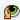

The Call Graph window displays two views of the calling relationships between the parts of your program. The left view is a hierarchical tree with expanding and collapsing nodes. The right view is a graphical view of the functions called from a selected function, or the functions that call that function. In addition, relationships between functions and variables are shown with dotted lines. The two views are synchronized.
The starting point of a call graph can be a function, variable, or field. Each element in the Call Graph is marked with an icon to identify its type.
To open the Call Graph:
To use the Call Graph:
Buttons at the left side of the Call Graph window allow you to change the display of the call tree nodes and graph.
| Button | Description |
|---|---|
|
|
Updates the display. |
|  | Focuses the display on the selected node in the call tree, and the node moves to the top. Subsequent actions apply to the function that has focus. |
|
|
Changes the display to the tree of functions called from the function that has focus. |
|
|
Changes the display to the tree of functions that call the function that has focus. |
| See Also | |
|---|---|
|
Using the Classes Window Finding Class, Method, and Fields Usages Using the Navigator Window |
|